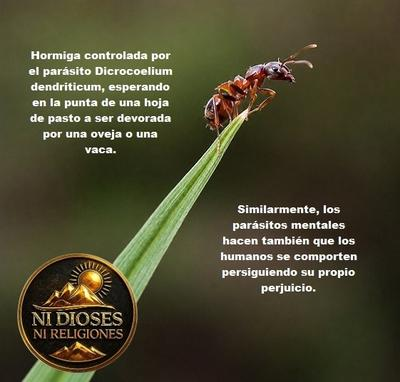

Resulta muy interesante que, desde la perspectiva de la biología evolutiva, los seres vivos no son los únicos sistemas capaces de reproducirse, expandirse y competir por recursos. También existen entidades informacionales que, aunque no estén vivas en sentido biológico, muestran comportamientos sorprendentemente similares a los de los genes, los virus y algunos parásitos. Y entre ellas se encuentran las ideas religiosas.


Esta comparación puede resultar incómoda para muchos creyentes, pero merece ser examinada seriamente. El concepto central fue desarrollado por el biólogo evolucionista británico Richard Dawkins (n. en 1941) en su libro The Selfish Gene (El gen egoísta), donde introdujo el término «meme». Un meme es una unidad de información cultural que se transmite de una mente a otra. Puede ser una melodía, una frase, una imagen que se transmite en las redes sociales, pero también una costumbre, una superstición o una creencia religiosa. Y según Dawkins, los memes se comportan de forma análoga a los genes: aquellos que logran replicarse con mayor eficacia, tienden a sobrevivir y expandirse. Y no importa si son verdaderos o falsos, beneficiosos o perjudiciales. Lo único que importa para su supervivencia es su capacidad para reproducirse.
Por su parte el filósofo estadounidense Daniel Dennett (1942-2024) amplió esta idea, al señalar que los memes constituyen replicadores culturales sometidos a procesos semejantes a la selección natural. Las ideas compiten entre sí por espacio en los cerebros humanos, y las más eficaces terminan dominando el paisaje cultural. Y para ilustrar cómo una entidad puede tomar el control del comportamiento de un huésped, Dennett utilizó un ejemplo asombroso de la biología: el parásito llamado Dicrocoelium dendriticum, conocido también como «lancet fluke» o duela pequeña del hígado.
Resulta que este organismo posee un ciclo de vida extraordinario: cuando infecta a una hormiga, uno de los parásitos se instala cerca de su sistema nervioso y altera su conducta. La hormiga deja entonces de actuar en función de sus propios intereses biológicos, y comienza a realizar acciones que favorecen exclusivamente al parásito. Se aferra a la punta de una hoja de pasto, especialmente durante las horas frescas, aumentando enormemente la probabilidad de ser devorada por una oveja o una vaca. Obviamente, para la hormiga este comportamiento no tiene ninguna ventaja, pero para el parásito representa la posibilidad de completar su ciclo reproductivo. O sea, desde el punto de vista evolutivo, el cerebro de la hormiga ha sido literalmente secuestrado. Y la pregunta que planteaba Dennett es inquietante: ¿puede ocurrir algo similar en los seres humanos?
Naturalmente, las religiones no son gusanos que invadan físicamente el cerebro. Son ideas. Sin embargo, algunas ideas poseen características sorprendentemente parecidas a las de los parásitos biológicos. Se introducen en la mente, modifican conductas y utilizan a sus portadores para reproducirse. Y Dennett sugería que, del mismo modo que el parásito utiliza a la hormiga para propagarse, ciertos sistemas de ideas utilizan a los seres humanos para asegurar su propia supervivencia cultural. Así, en sus conferencias llegó a plantear que algunas doctrinas religiosas podían entenderse como complejos de memes extraordinariamente eficaces para reproducirse y resistir a la extinción.
Observemos aquí un detalle importante: la inmensa mayoría de las personas religiosas no adoptaron su fe después de un análisis racional y exhaustivo de todas las religiones existentes. La adquirieron durante la infancia, y desde una perspectiva evolutiva, los niños constituyen un terreno especialmente fértil para la implantación de memes religiosos, puesto que la supervivencia de un niño depende de confiar plenamente en los adultos que lo rodean, y por ello, la evolución favoreció una fuerte tendencia a aceptar la información transmitida por padres y autoridades. Es una predisposición que resulta muy útil cuando se trata de aprender que el fuego quema, o que una serpiente puede ser peligrosa, pero también puede facilitar la aceptación acrítica de doctrinas sobrenaturales.
Cuando a un niño se le repite durante años que existe un «Dios» invisible que lo observa constantemente, que sus pensamientos son vigilados, que ciertas dudas son pecaminosas, y que su salvación depende de aceptar determinadas creencias, esos conceptos se integran profundamente en su estructura mental, antes de que haya desarrollado plenamente sus capacidades críticas. Es una forma de inoculación ideológica similar a la de un virus. No es, ciertamente, una analogía perfecta, pero resulta esclarecedora. Porque un virus introduce instrucciones en una célula y utiliza la maquinaria celular para producir copias de sí mismo. Y del mismo modo, ciertos memes (en el sentido de ideas o mensajes) religiosos, introducen instrucciones conductuales que impulsan a los creyentes a difundirlos: «No guardes la fe para ti», «Predica», «Evangeliza», «Obtén discípulos», «Convierte a otros». Son órdenes que aparecen en numerosas tradiciones religiosas, y que funcionan como mecanismos de replicación cultural extraordinariamente eficaces.
Pero quizá el rasgo más interesante desde la perspectiva memética, sea la existencia de defensas contra el cuestionamiento, ya que muchas doctrinas religiosas incorporan ideas destinadas a protegerlas de la crítica. Se enseña que la duda es peligrosa, que cuestionar la fe puede ser pecado, que los escépticos están confundidos o influenciados por fuerzas malignas, o que ciertas preguntas simplemente no deben hacerse. Lo que en términos biológicos sería algo semejante a un sistema inmunológico diseñado para proteger al propio meme. Y la consecuencia es que las creencias pueden persistir durante décadas, incluso cuando entran en conflicto con evidencias empíricas o razonamientos lógicos. No porque sean necesariamente verdaderas, sino porque han desarrollado mecanismos culturales que dificultan su eliminación.
Así, las doctrinas religiosas más exitosas no son necesariamente las más verdaderas, sino aquellas que mejor han evolucionado para sobrevivir en el ecosistema de las mentes humanas. E igual como ocurre con los genes, la selección favorece aquello que logra reproducirse con eficacia.
Por supuesto, esta comparación no implica que todos los creyentes sean irracionales ni que toda manifestación religiosa sea completamente dañina. Las religiones también pueden proporcionar identidad grupal, apoyo social y sentido existencial. Sin embargo, desde el punto de vista de la evolución cultural, resulta legítimo preguntarse si muchas doctrinas sobreviven porque benefician a las personas, o porque benefician su propia reproducción.
En el caso de los genes, no tienen conciencia, pero se propagan porque las leyes de la evolución favorecen a los mejores replicadores. Asimismo, los virus tampoco tienen intenciones, pero se multiplican porque sus características les permiten hacerlo. Y los parásitos biológicos tampoco persiguen metas conscientes, pero evolucionan estrategias para manipular a sus huéspedes. Y también los memes religiosos más exitosos parecen haber desarrollado mecanismos extraordinariamente eficaces para colonizar nuevas mentes, protegerse de la crítica y asegurar su transmisión de generación en generación.
Aunque la diferencia fundamental es que los seres humanos poseen algo que las hormigas parasitadas no tienen: la capacidad de examinar críticamente las ideas que habitan en su mente. De modo que la pregunta que cada individuo puede hacerse es sencilla pero profunda: ¿mis creencias están ahí porque las he sometido a un análisis libre y racional, o porque fueron implantadas cuando aún no tenía las herramientas intelectuales necesarias para evaluarlas? La respuesta a esta pregunta puede marcar la diferencia entre ser el dueño de tus propias ideas o solamente el vehículo que las transporta.
Como una aclaración digamos que la teoría de los memes y las comparaciones entre creencias religiosas y parásitos mentales constituyen una interpretación filosófica y evolutiva de la transmisión cultural de las ideas. Pero, aunque estas analogías han sido defendidas por autores como Richard Dawkins y Daniel Dennett, no representan un consenso científico universal, ni pueden entenderse como una descripción literal del funcionamiento del cerebro humano. Su valor reside principalmente en ofrecer una perspectiva crítica para reflexionar sobre cómo ciertas creencias se difunden, se preservan, y resisten el cuestionamiento a lo largo de las generaciones.
[Godless Freeman]
Comentarios
Comments powered by Disqus